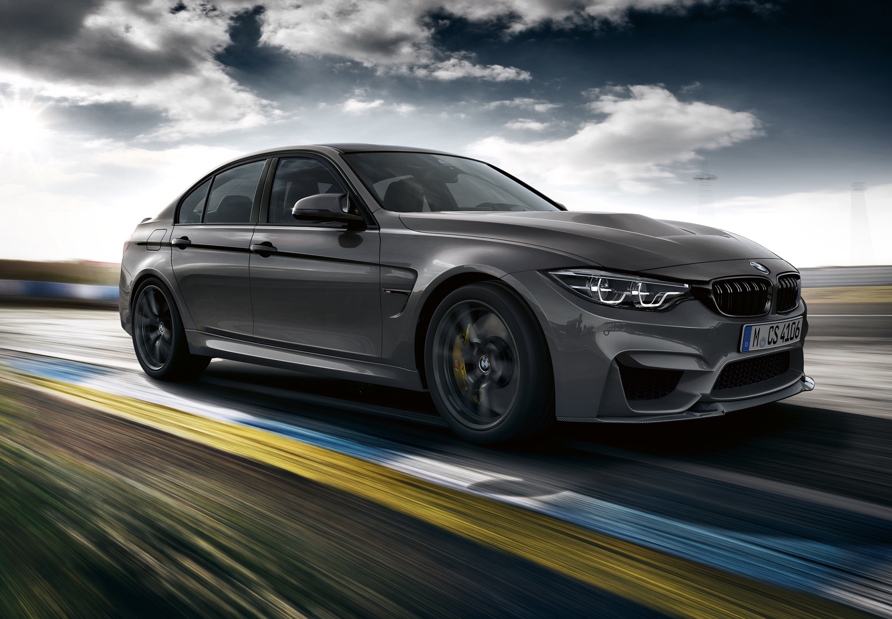

Strona główna
Strona główna BMW M3.
O nas
Kilka słów o naszej firmie.
BMW M3 – sportowa wersja samochodów BMW oparta na serii 3. Pierwsze BMW M3 pojawiło się w 1985 roku. Obecnie istnieje już 6 generacji tych pojazdów. Moc waha się od 195 KM w najstarszym modelu E30 do 500 KM w modelu M4 GTS (F82). W obecnej generacji F80 nazwa M3 odnosi się tylko do wersji sedan, wersja coupé otrzymała nazwę M4 i oznaczenie F80
Historia BMW M3
BMW M3 to sportowy model niemieckiego producenta BMW, który zadebiutował w 1986 roku. Jego celem było połączenie wydajności wyścigowego samochodu z komfortem jazdy codziennej.
Wersje M3 różnią się od swoich bazowych modeli nie tylko pod względem mocy silnika, ale także wyglądem, który zazwyczaj jest bardziej agresywny. Każda generacja M3 przynosiła znaczące innowacje technologiczne.
"BMW M3 to perfekcyjna kombinacja mocy i precyzji. W jego DNA zapisane są wyścigi."
Generacje BMW M3
- E30 (1986-1991)
- E36 (1992-1999)
- E46 (2000-2006)
- E90/E92/E93 (2007-2013)
- F80 (2014-2018)
Nasze usługi
Oferujemy szeroki zakres usług związanych z pojazdami BMW, a w szczególności modelami serii M3:
1. Serwis i konserwacja
Nasz wykwalifikowany zespół mechaników zapewnia pełną diagnostykę oraz serwis techniczny BMW, w tym wymianę oleju, naprawy silnika, systemów hamulcowych i zawieszenia. Stawiamy na oryginalne części oraz zaawansowaną technologię diagnostyczną.
2. Modyfikacje i tuning
Oferujemy profesjonalne usługi tuningu, które zwiększą osiągi Twojego BMW M3. Zajmujemy się optymalizacją silnika, montażem ulepszonych komponentów, takich jak układy wydechowe, zawieszenia czy hamulce.
3. Detailing i kosmetyka samochodowa
Dbamy o każdy detal. Zajmujemy się pełnym detailingiem wnętrza i karoserii, oferując takie usługi jak polerowanie, woskowanie, odnowa lakieru oraz ochrona ceramiczna, by Twoje BMW zawsze wyglądało jak nowe.
4. Doradztwo i sprzedaż aut używanych
Pomagamy w zakupie i sprzedaży samochodów BMW M3. Nasi eksperci zapewnią pełne doradztwo techniczne oraz ocenę stanu pojazdu, byś miał pewność, że wybierasz najlepszy egzemplarz.
5. Wsparcie podczas wydarzeń motoryzacyjnych
Oferujemy kompleksowe wsparcie techniczne, przygotowanie samochodu do eventu oraz profesjonalną opiekę serwisową podczas imprez motoryzacyjnych, w tym wyścigów.
Kontakt
Informacje kontaktowe:
Email: ss51102@zut.edu.pl
Telefon: +48 123-456-789